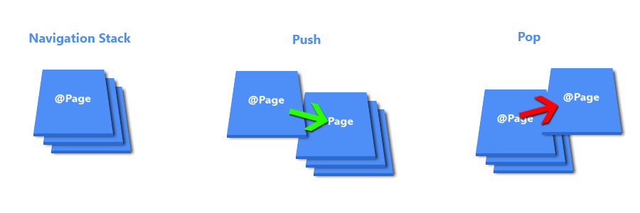

# Working with Angular in Ionic Learn to work with [Angular][angular] in an [Ionic][ionic] project. **Recommended reading** * [Ionic](../ionic/) * [Angular](../angular/) --- ## Scaffolding .breadcrumbs[<a href="#1">Working with Angular in Ionic</a>] The `ionic` command comes with its own scaffolding sub-command, `generate`, which can help you quickly generate new application elements: ```bash $> ionic generate --help ionic generate - Generate pipes, components, pages, directives, providers, and tabs (ionic-angular >= 3.0.0) Automatically create components for your Ionic app. The given name is normalized into an appropriate naming convention. For example, ionic generate page neat creates a page by the name of NeatPage in src/pages/neat/. ... ``` For example, you can generate a new page by running: ```ts $> ionic generate page MyPage --no-module ``` (Remove the `--no-module` option if you want to generate a new module along with the component.) --- ## Navigation .breadcrumbs[<a href="#1">Working with Angular in Ionic</a>] **Web applications** developed with [Angular][angular] usually use the [Angular router][angular-router] for navigation. However, since we are in an **[Ionic][ionic] application** which will run in a **mobile context**, the URL-based Angular router is not appropriate to handle our navigation needs. Instead, Ionic provides its own [`NavController`][ionic-nav-controller] service to handle navigation. [Navigation][ionic-nav-tutorial] in Ionic works like a simple stack, where we **push new pages onto the top of the stack**, which takes us **forwards** in the app and shows a back button. To go **backwards**, we **pop the top page off**. <p class='center'></p> --- ### Navigating to a page .breadcrumbs[<a href="#1">Working with Angular in Ionic</a> > <a href="#3">Navigation</a>] Let's start by generating a new page to navigate to: ```bash $> ionic generate page DetailsPage --no-module ``` This generates a new page component in `src/app/pages/details`. Update its HTML template to display something: ```html <!-- ... --> <ion-content padding> * Details </ion-content> ``` --- #### Registering the new page component .breadcrumbs[<a href="#1">Working with Angular in Ionic</a> > <a href="#3">Navigation</a> > <a href="#4">Navigating to a page</a>] Add the new `DetailsPage` component to the `declarations` and `entryComponents` arrays of your application's module, typically in `src/app/app.module.ts` in a starter project: ```ts *import { DetailsPage } from '../pages/details/details'; @NgModule({ // ... declarations: [ // Other declarations... * DetailsPage ], entryComponents: [ // Other entry components... * DetailsPage ] }) export class AppModule {} ``` --- #### Using `NavController` to navigate .breadcrumbs[<a href="#1">Working with Angular in Ionic</a> > <a href="#3">Navigation</a> > <a href="#4">Navigating to a page</a>] Now that we have our new page, let's add a `goToDetails()` method in another component to **navigate to it**. If it's not done already, also inject Ionic's `NavController` in the constructor. This is how you would do it in a sample `ExamplePage` component: ```ts // Other imports import { `NavController`, NavParams } from 'ionic-angular'; *import { DetailsPage } from '../details/details'; @Component({ selector: 'page-example', templateUrl: 'example.html', }) export class ExamplePage { // ... constructor( // Other constructor parameters... `public navCtrl: NavController` ) { // ... } // ... * goToDetails() { * this.navCtrl.push(DetailsPage); * } } ``` --- #### Adding a navigation button .breadcrumbs[<a href="#1">Working with Angular in Ionic</a> > <a href="#3">Navigation</a> > <a href="#4">Navigating to a page</a>] Add a `<button>` to your component's HTML template to call the new method: ```html <!-- ... --> <ion-content padding> <!-- ... --> * <button ion-button (click)='goToDetails()'>Go to details</button> </ion-content> ``` You should now be able to navigate to the details page. Note that a back button should appear to allow you to pop the new page off the navigation stack (this is done automatically if you have an `<ion-navbar>` tag in the page header). --- ### Passing parameters .breadcrumbs[<a href="#1">Working with Angular in Ionic</a> > <a href="#3">Navigation</a>] You can **pass parameters to another page** by simply providing them as a second argument to `NavController`'s `push` method: ```ts goToDetails() { this.navCtrl.push(DetailsPage, `{ id: 23 }`); } ``` To retrieve these parameters in the details page, you simply need to inject a `NavParams` object and retrieve its `data` property: ```ts export class DetailsPage { constructor(public navCtrl: NavController, `public navParams: NavParams`) { * console.log(this.navParams.data); // { id: 23 } } } ``` You can also display parameters in the template: ```html <!-- ... --> <ion-content padding> Details`: {{ navParams.data.id }}` </ion-content> ``` --- ### Lifecycle hooks .breadcrumbs[<a href="#1">Working with Angular in Ionic</a> > <a href="#3">Navigation</a>] Any component pushed on the navigation stack may implement any of these lifecycle methods to be notified of navigation events: Method | Called when :--- | :--- `ionViewDidLoad` | The page has loaded. This event only happens once per page being created. If a page leaves but is cached, then this event will not fire again on a subsequent viewing. It is a good place to put your setup code for the page. `ionViewWillEnter` | The page is about to enter and become the active page. `ionViewDidEnter` | The page has fully entered and is now the active page. This event will fire, whether it was the first load or a cached page. `ionViewWillLeave` | The page is about to leave and no longer be the active page. `ionViewDidLeave` | The page has finished leaving and is no longer the active page. `ionViewWillUnload` | The page is about to be destroyed and have its elements removed. --- #### Authentication hooks .breadcrumbs[<a href="#1">Working with Angular in Ionic</a> > <a href="#3">Navigation</a> > <a href="#9">Lifecycle hooks</a>] Additionally, these 2 hooks can be used to perform **authentication** before allowing the user to view a component: Method | Return type | Called when :--- | :--- | :--- `ionViewCanEnter` | `boolean` or `Promise` | Before the view can enter. This can be used as a sort of "guard" in authenticated views where you need to check permissions before the view can enter. `ionViewCanLeave` | `boolean` or `Promise` | Before the view can leave. This can be used as a sort of "guard" in authenticated views where you need to check permissions before the view can leave. You may return a Promise from these hooks if you need to perform some **asynchronous** checks. --- ## Resources .breadcrumbs[<a href="#1">Working with Angular in Ionic</a>] **Documentation** * [Ionic][ionic-docs] * [Navigation][ionic-nav-tutorial] * [Navigation Component][ionic-nav-component] * [NavController][ionic-nav-controller] * [Angular][angular-docs] [angular]: https://angular.io [angular-docs]: https://angular.io/docs [angular-router]: https://angular.io/guide/router [ionic]: http://ionicframework.com [ionic-docs]: https://ionicframework.com/docs/ [ionic-nav-component]: https://ionicframework.com/docs/components/#navigation [ionic-nav-controller]: https://ionicframework.com/docs/api/navigation/NavController/ [ionic-nav-tutorial]: https://ionicframework.com/docs/intro/tutorial/navigation/